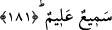

Allah’dan sakınıyorsanız bununla amel etmeyi terketmeyin.
İbn Şeyh, Havâşî’sinde şöyle demiştir: “Vasiyet muttakîler üzerine bir borçtur.”
âyeti, vasiyyetin sadece takvâ sâhibi kimselere mahsûs bir teklif olduğunu ifâde
etmektedir. Halbuki icmâa göre “bütün teklifler, emirler ve nehiyler, müttakî olsun
olmasın herkese şâmildir. Bu nasıl olur?” diye sorulursa şöyle cevap verilebilir: Âyette
zikredilen “müttakîlerden” maksad, takvâyı tercih eden, onu arayan ve onu kendisine yol
edinen kimselerdir. Böylece bunun içerisine bütün mükellefler girmiş olur.
181. Her kim bunu işittikten ve kabullendikten sonra vasiyeti değiştirirse, günahı
onu değiştirenleredir. Şüphesiz Allah (her şeyi) işitir ve (her şeyi) bilir.
Bazıları bu âyete: Kim vasiyeti, şerîatın istediği tarzdan başka türlü yaparsa”
mânâsını vermişlerse de uygun olan, vasiyet edilen şeyin değiştirilmesidir. Bunu
değiştirecek olan kendine vasiyet edilen veya şâhid olan kimsedir. Eğer vasiyyet edilen
doğrusunu bildiği halde yazarken veya hakları paylaştırırken bile bile istenilene aykırı
davranır ve şâhid de yalancı şâhidlik yapmak veya şâhidliği gizlemek sûretiyle diğerine
ortaklık ederse, bu değiştirmenin günahı onlaradır. Çünkü onlar hıyânette bulunmuşlar
ve şerîatın emrine muhalefet etmişlerdir. Bu değiştirme, vasiyet edilen malın hak
sâhibine ulaşmasını engellemek sûretiyle, diğer insanlar tarafından da olabilir. Hâsılı
hepsi bu günaha ortaktır. Fakat vasiyyette bulunan kimseye bir günah yoktur.
Allah “semî”dir, yapılan vasiyeti ve onun değiştirilmesini işitir. “Alim”dir, vasiyet
sevâbının, onu değiştirenin de cezâsının ne olduğunu bilir ve herbirine hak ettiği
karşılığı verir.
182. Her kim, vasiyet edenin haksızlığa yahut günaha meyletmesinden endişe
eder de(alâkalıların) aralarını bulursa kendisine günah yoktur. Şüphesiz Allah çok
bağışlayan hem de esirgeyendir.
Bir önceki âyette belirtildiği üzere, yapılan vasiyeti değiştirmek büyük günahtır. Fakat
vasiyyette bulunan kimsenin, hatâ ile veya kasden bir yanlışlık yaptığını farkeden ve
bunun bir haksızlığa sebebiyet vermesinden korkan kişi, yapılan vasiyeti değiştirmek
sûretiyle onu alâkalılar arasında uygun bir şekilde dağıtabilir. Bunda bir sakınca yoktur.